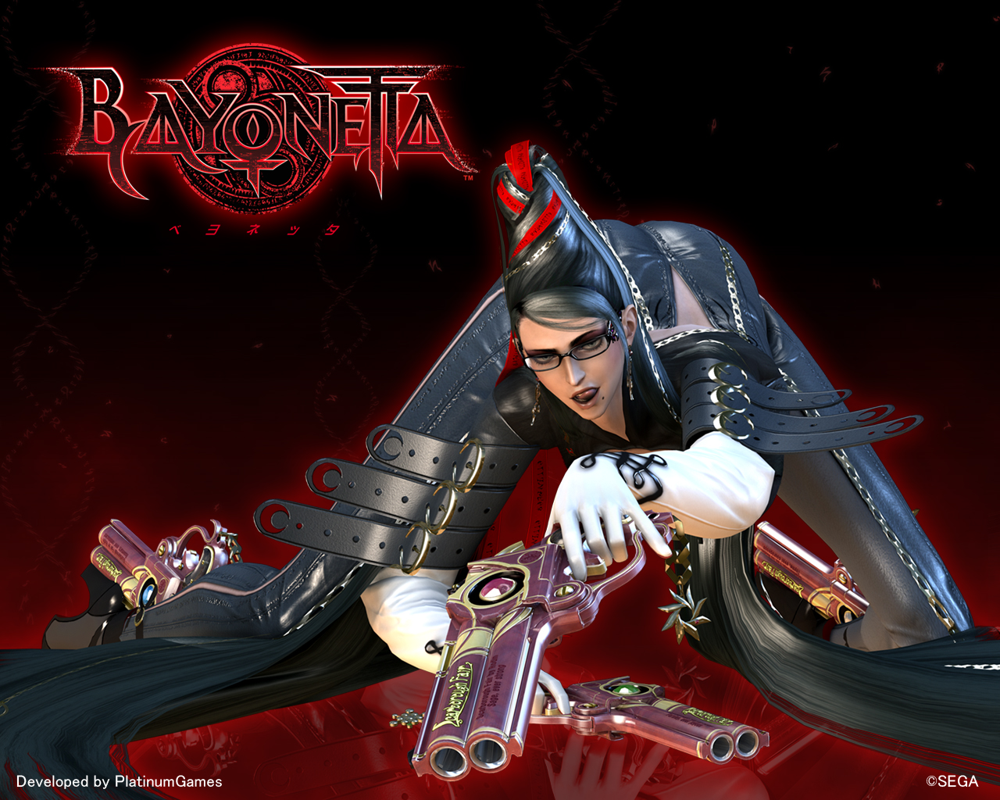
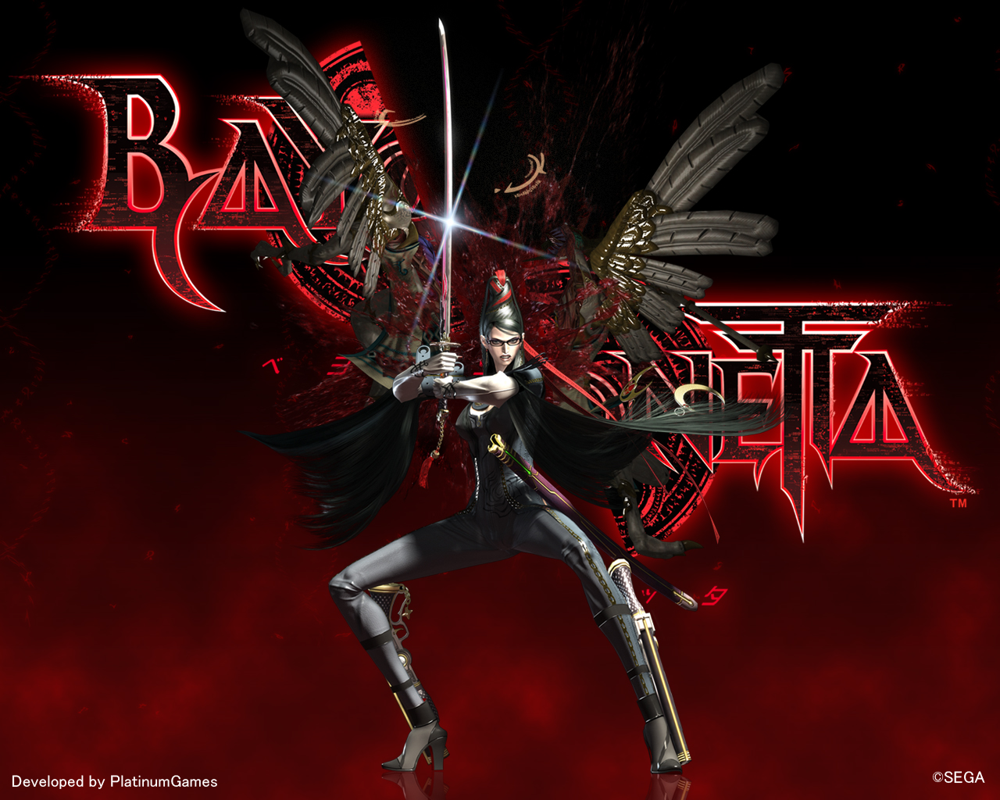
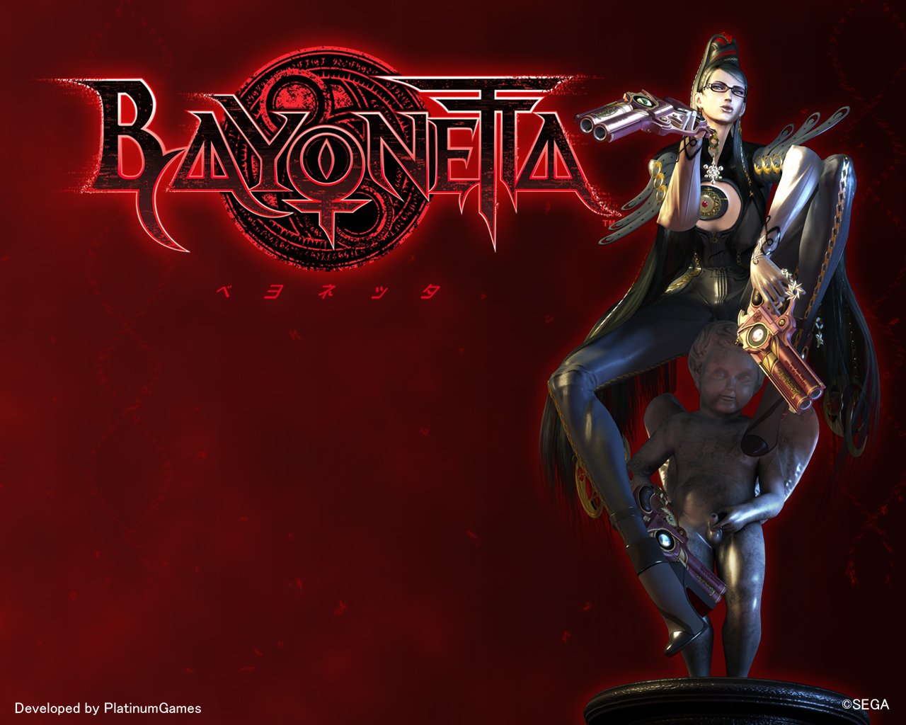

距離發售日還有約一個月的時間(2009.10.29)先來看影片過癮過癮唄~
話說,影片中的男主角惡搞刺客教條(?)
9/24 官網更新
．「Action」頁面新增擁有火炎及雷電屬性的爪系武器
．「Power UP」頁面新增強化道具
．「Movie」頁面新增「TGS 2009 Trailer」
．下載頁面新增3款壁紙

附件: bayo cat.jpg
9/11 Bayo Blog更新
Bayonetta武器設計相關(2)

附件: bayo shuraba.jpg
9/18 Bayo Blog更新
Bayonetta音樂製作相關(2)

附件: bayo sit.jpg
9/24 Bayo Blog更新
預約特典OST原聲集「Rodin\s Selection」相關
官方網址
http://bayonetta.jp/Bayo Blog
http://blog.bayonetta.jp/資料來源：巴哈姆特-BAYONETTA哈拉版, 218.168.84.25, 0, 0, 1, 0, 0, -1, 0, 2, 0, 0, 0